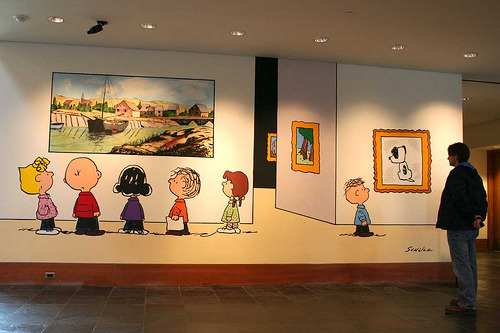

Faboulous Outdoors
Sonoma county has hundreds of beautiful trails with fantastic views and with all levels of difficulty
Great Food & Wine
Sonoma county is famous for its wines but also has a long gastronomical tradition.
George Schultz Museum
George Schults, the creator of Peanuts, lived his entire life in Santa Rosa. The George Schults museums tells the life of this extraordinary man and of his worldwide famous cartoon characters.
"I have been living in California for 30 years and in Santa Rosa for the last year, and I am ready to show you Sonoma's most beautiful scenaries, famous wineries and delicious food"